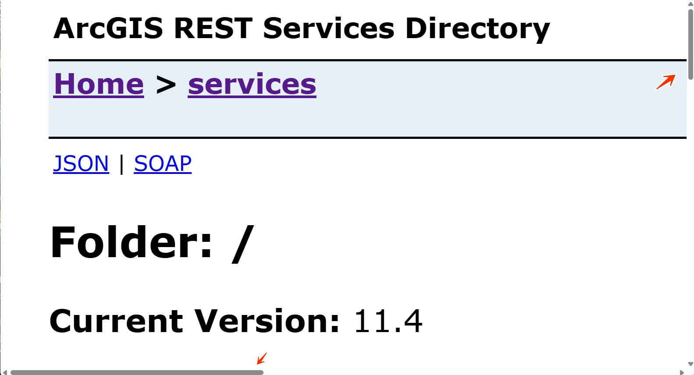
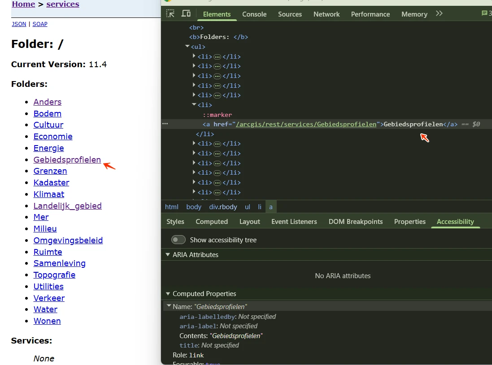

#1 - Herhalende content niet te omzeilen
Op alle pagina's van de website ontbreekt een manier om herhalende content over te slaan. Er is geen skiplink, geen semantische landmarks en geen koppenstructuur die als alternatief kan dienen.
Daardoor moeten bezoekers die met het toetsenbord of een schermlezer navigeren bij elke pagina dezelfde menu-onderdelen doorlopen voordat zij bij de hoofdinhoud komen.
User story
Als bezoeker die navigeert met het toetsenbord, een schermlezer, spraakbesturing of een switch, heb ik op elke pagina een manier nodig om de herhalende navigatie over te slaan, bijvoorbeeld een werkende skiplink. Nu moet ik op elke pagina door dezelfde menu-items tabben voordat ik bij de inhoud kom.
Hoe te testen
Tab vanuit de adresbalk een keer de pagina in. Een skiplink ("Ga naar hoofdinhoud") hoort het eerste focusbare element te zijn, zichtbaar te worden zodra hij focus krijgt en bij activeren de focus naar de hoofdinhoud te verplaatsen. Landmarks en een goede koppenstructuur zijn aanvullend.
Oplossing
Zorg ervoor dat bezoekers vaste onderdelen van de pagina kunnen overslaan en direct naar de hoofdinhoud kunnen gaan. Dit kan bijvoorbeeld door:
- een skiplink die bij gebruik de toetsenbordfocus naar de hoofdinhoud verplaatst;
- het duidelijk afbakenen van paginadelen, zoals navigatie en hoofdinhoud, met landmarks;
- een consistente en correcte koppenstructuur die op elke pagina wordt toegepast.
Een skiplink moet de eerste link op de pagina zijn. Deze mag standaard verborgen zijn, maar moet zichtbaar worden zodra hij toetsenbordfocus krijgt.
#2 - Bij 400% inzoomen verschijnt een horizontale schuifbalk

Bij een schermresolutie van 1280 bij 1024 pixels en 400% zoom verschijnt op de website een horizontale schuifbalk. Een deel van de links is dan niet meer zichtbaar, bijvoorbeeld "Login".
Horizontaal scrollen mag niet nodig zijn, ook niet wanneer de viewport is ingesteld op 320 CSS-pixels breed (voor verticale content) of 256 CSS-pixels hoog (voor horizontale content). De inhoud moet binnen de breedte van het scherm passen. Scrollen in twee richtingen mag alleen als dat echt nodig is voor de betekenis of het gebruik, zoals bij tabellen, betekenisvolle afbeeldingen en kaarten.
User story
Als bezoeker met een visuele beperking zoom ik in tot 400% om de tekst te kunnen lezen. Nu verschijnt er een horizontale schuifbalk en moet ik op elke regel heen en weer scrollen. Ik heb nodig dat de tekst automatisch binnen de breedte van mijn scherm past.
Hoe te testen
Zet de browser op 320 CSS-pixels breed (of 1280px bij 400% zoom) en scroll verticaal. Om de inhoud te lezen mag horizontaal scrollen niet nodig zijn, behalve bij echte tweedimensionale content zoals tabellen, kaarten en code. Let op banners, headers met een vaste breedte en lange URL's.
Oplossing
Controleer of horizontaal scrollen echt nodig is. Is dat niet zo, zorg er dan voor dat horizontaal scrollen niet mogelijk is wanneer er wordt ingezoomd, zodat de inhoud zich aanpast aan de schermbreedte.
#3 - Tekst die als kop fungeert is niet als kop opgemaakt
Op alle pagina's is de tekst "ArcGIS REST Services Directory" niet als kop opgemaakt. Wanneer tekst als kop fungeert maar de juiste opmaak in de code mist, verliest die zijn betekenis voor bezoekers die hulpsoftware zoals een schermlezer gebruiken. Koppen zijn belangrijk om de structuur van een pagina te begrijpen en er doorheen te navigeren.
User story
Als bezoeker die de website met een schermlezer leest, navigeer ik graag van kop naar kop om snel een overzicht te krijgen. Nu mis ik koppen die alleen visueel zijn opgemaakt. Ik heb nodig dat elke zichtbare kop ook in de code een kop is, zodat mijn schermlezer hem als kop aankondigt.
Hoe te testen
Snel controleren met onze tool: gebruik de koppenstructuur-checker. Plak de URL van de pagina en bekijk de lijst met koppen.
- Loop alle teksten op de pagina langs die er visueel als kop uitzien (groter, vetter, een afwijkende kleur of een nadrukkelijke plek).
- Staan ze allemaal in de lijst van de koppenstructuur-checker? Zo niet, dan zijn ze niet opgemaakt met h1-h6.
- Controleer met een schermlezer: navigeer met H (NVDA, JAWS) of de rotor (VoiceOver). Elke visuele kop moet als kop worden aangekondigd.
Oplossing
Maak deze tekst op met het juiste kop-element (h1 tot en met h6), passend bij de rol en de plek in de hiërarchie van de inhoud.
#4 - Anderstalige content heeft geen taalcode

Op alle pagina's staat tekst in een andere taal (Nederlands) zonder taalcode (nl), bijvoorbeeld in de broodkruimels: "Gebiedsprofielen" en andere termen. Hierdoor leest een schermlezer deze tekst voor met de uitspraakregels van de hoofdtaal, waardoor de woorden verkeerd worden uitgesproken.
User story
Als bezoeker die de pagina laat voorlezen door een schermlezer, kom ik woorden tegen in een andere taal dan de hoofdtaal van de pagina. Nu worden die met de verkeerde klanken uitgesproken. Ik heb nodig dat elke taal met de juiste uitspraak wordt voorgelezen.
Hoe te testen
Zoek passages in een andere taal dan de hoofdtaal van de pagina: citaten, anderstalige namen, Nederlandse UI-labels op een Engelse pagina. Elke passage heeft een eigen lang-attribuut nodig. Luister mee met een schermlezer: de uitspraak moet correct meeschakelen.
Oplossing
Voeg een lang-attribuut met de juiste taalcode toe aan het element met de anderstalige tekst. Voeg bijvoorbeeld bij Nederlandse tekst lang="nl" toe aan het betreffende element.